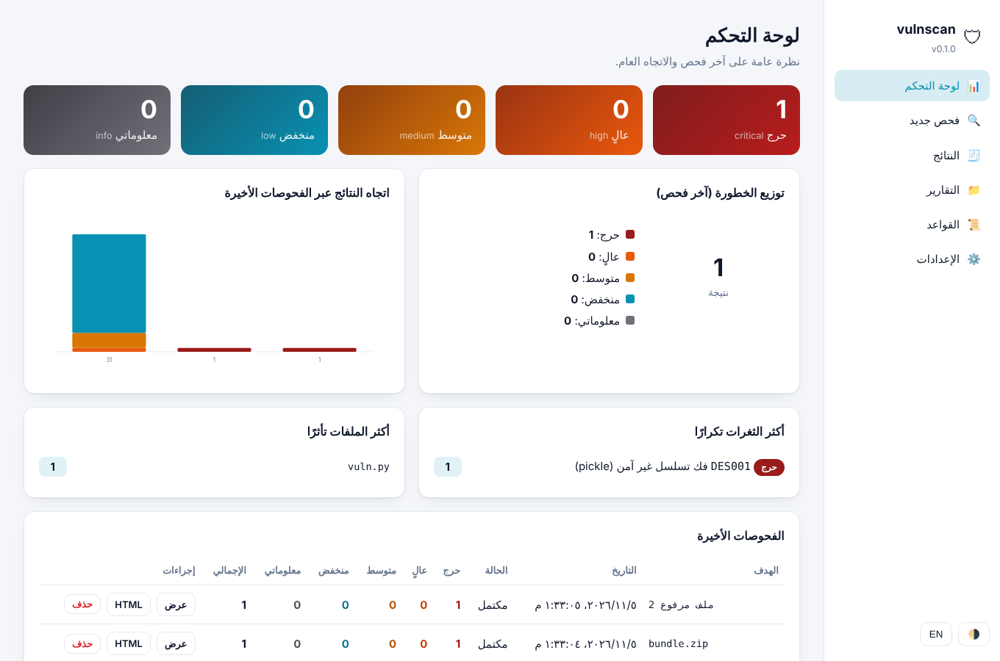

Security scanning that traces every path from input to impact.
Kashif is an open-source static application security testing tool. It follows untrusted input from source to sink across 12 languages, Oracle APEX and Android apps — with zero dependencies, entirely on your machine.
1import os2from flask import Flask, request34app = Flask(__name__)56@app.route("/ping")7def ping():8 host = request.args.get("host")source9 cmd = "ping -c 1 " + host10 os.system(cmd)sink11 return "ok"
- 1source
request.args.get("host")app.py:8 - 2flow
cmd = "ping -c 1 " + hostapp.py:9 - 3sink
os.system(cmd)app.py:10
- 79.3%OWASP Benchmark Python score
- SARIF 2.1.0GitHub Code Scanning & VS Code
- SLSA + SBOMSigned build provenance, CycloneDX
- 0 dependenciesPure Python or a single binary
- MITOpen source, free forever
- OfflineRuns with no network at all
One scanner for code, apps, archives and sites.
Pattern rules, a cross-file dataflow engine and a query language — plus secrets, dependency CVEs and passive web checks, in a single tool you can run anywhere.
Dataflow (taint) analysis
Tracks untrusted input across functions, classes and files, and attaches the full source-to-sink path to every finding.
Flow- and context-sensitive
Constant folding and dead-branch pruning, plus context-sensitive (k=2) points-to so one factory called from two places yields two objects.
Context-specific sanitizers
html.escape protects HTML — not SQL or a shell. Sanitizers only clear the sinks they actually defend.
Second-order injection
Follows user data stored in a database table and later read back into SQL or a shell command — stored injection, in every language.
Secrets detection
Provider-specific patterns for cloud, payment and chat keys, plus entropy analysis that catches keys with no known format.
Dependency CVEs
Looks up known vulnerabilities for your lockfiles via OSV.dev. Optional, and the only feature that uses the network.
Archives, APK & JAR
Drop in a zip, tar.gz, APK, JAR, AAR or DEX. With jadx installed, Android and Java bytecode is decompiled and analyzed.
Passive web scanning
Security headers, CSP, TLS, cookies and commonly exposed paths, with a rate-limited crawl and an honest User-Agent.
Local web UI
Dashboard, scans, reports and settings in Arabic and English. No server to install, no account, nothing uploaded.

Measured in public. Reproducible with one command.
We score Kashif on the OWASP Benchmark and publish every category — the weak ones included.
OWASP Benchmark · test cases. Score = mean over categories of true-positive rate minus false-positive rate (Youden's J).
| Category | TPR | FPR | Score (TPR − FPR) |
|---|
Fits the pipeline you already have.
Upload SARIF to GitHub Code Scanning and findings appear in the Security tab and inline on pull requests, with severity, CWE and the dataflow path.
name: vulnscan on: [push, pull_request] permissions: contents: read security-events: write # required to upload SARIF jobs: scan: runs-on: ubuntu-latest steps: - uses: actions/checkout@v4 - uses: actions/setup-python@v5 with: { python-version: "3.12" } - run: pip install git+https://github.com/abdulrahmanahmedelabed-prog/vulnscan - run: vulnscan . --no-deps -f sarif -o vulnscan.sarif - uses: github/codeql-action/upload-sarif@v3 if: always() with: sarif_file: vulnscan.sarif
Baseline: only what's new
Record today's findings once and commit the file (fingerprints only, no code). Later scans report and fail CI on new findings alone. Fingerprints survive line shifts and reformatting.
Audit profile
For security reviews, --audit also lists every dangerous call (eval, shell, SQL, pickle…) that dataflow could not prove reachable — so reviewers see the whole attack surface.
Outputs
SARIF is validated against the OASIS 2.1.0 schema. Every finding carries a stable fingerprint.
12 languages with dataflow — and the places other scanners skip.
The same taint engine runs over every language below, alongside pattern rules for configuration, containers and CI.
Oracle APEX & ORDS
Analyzes APEX application exports, plug-ins and PL/SQL packages — SQL injection, substitution strings, XSS and AI-assistant prompt injection — and points to the page and component.
Android APK / JAR via jadx
Unpacks APK, JAR, AAR and DEX files and runs dataflow over the decompiled code, with third-party libraries excluded by default.
Passive web scan
Read-only checks of a site you are authorized to test: no payloads, no form submission, no brute forcing. Requires --authorized.
How Kashif compares — honestly.
The established tools are excellent. Here is where each one is strong, and where Kashif fills a gap.
| Capability | Kashif | Semgrep | SonarQube | Snyk Code | CodeQL | Bandit | Trivy |
|---|---|---|---|---|---|---|---|
| Dataflow (taint) analysis | 12 languages | Pro (cross-file) | Deepest | AST only | |||
| Rule & library-model breadth | Growing | Large | Large | Large | Large | Python only | IaC & config |
| IDE & pull-request integrations | Via SARIF | Limited | |||||
| Years of real-world tuning | New | ||||||
| Runs fully local, no account | Community Edition | Self-hosted server | Cloud account | CLI | |||
| Runtime dependencies | None | Binary | Java + database | CLI + account | CLI bundle | pip | Binary |
| Oracle APEX & PL/SQL | Code + dataflow | PL/SQL (commercial) | |||||
| Archives, APK & JAR | With jadx | Images & artifacts | |||||
| Passive web scanning | Separate product | ||||||
| Local web UI | Built in | Cloud app | Self-hosted server | Cloud app | On GitHub | ||
| Arabic interface & reports | |||||||
| Price | Free (MIT) | Free tier + paid | Free tier + paid | Free tier + paid | Free for public repos | Free | Free |
Where the big tools lead
Semgrep, SonarQube, Snyk Code and CodeQL have far more rules and library models, IDE and pull-request integrations, and years of tuning on real codebases. If you already run them, keep them.
Where Kashif fits
Fully local with zero dependencies, an Arabic interface, Oracle APEX and PL/SQL, archives and Android apps, and passive web checks in one tool. It can also merge Semgrep, Bandit, gitleaks and npm audit results into its dashboard.
Download Kashif v__VERSION__
Single-file binaries — nothing to install. Run with no arguments to open the web UI, or pass a path to scan from the command line.
Windows
Double-click vulnscan-windows.exe to open the web UI, or run it from a terminal:
Linux
Make the file executable, then run it:
macOS
The binary is not notarized by Apple. On first launch remove the quarantine flag once (or right-click › Open):
Verify what you run
Every release ships SHA256SUMS.txt, a CycloneDX SBOM (vulnscan-sbom.cdx.json) and signed SLSA build provenance. All GitHub Actions are pinned by commit SHA.
Or install with pip
Python 3.10 or newer. No runtime dependencies are pulled in.
Questions, answered.
Is it free?
Yes. Kashif is open source under the MIT license — free for personal and commercial use, with no paid tier.
Does it upload my code?
No. Everything runs locally and the web UI listens on 127.0.0.1 only. The one optional network feature is the OSV.dev dependency lookup, which sends package names and versions — never source code. Turn it off with --no-deps.
How accurate is it?
On the OWASP Benchmark for Python it scores 79.3% (mean of TPR − FPR over 14 categories), and you can reproduce that with one command. Like every static analyzer it has false positives and misses; treat results as a strong first pass, not a replacement for review.
Which languages does it support?
Dataflow analysis for Python, JavaScript/TypeScript, Java, Kotlin, C#, Go, PHP, C/C++, Rust, Swift, Ruby and PL/SQL, plus Oracle APEX exports, Android APK/JAR (via jadx), configuration, containers, CI files and passive web scanning.
How do I report a security issue in Kashif?
Please use GitHub's private vulnerability reporting, as described in SECURITY.md. Do not open a public issue.
Start scanning in a minute.
Download a binary, point it at a project, and read a report ordered from critical to info.